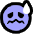

Guía de Buffs y Debuffs
Mientras juegan a la Alfa, muchos jugadores notan los iconos que se aplican a los Axies después de ciertos ataques. El primer encuentro es típicamente con un ataque en el PVE, dejando un símbolo antiestético sobre la cabeza de sus Axies. Este símbolo, se llama modificador de estado – en este caso, el icono representa un modificador llamado «stun», un «debuff» que afecta negativamente a tu Axie. Lo opuesto a esto, se llama «buff» – que es un modificador que afecta positivamente a un Axie. Actualmente hay 16 modificadores de estado en el juego, repartidos entre 3 buffs y 13 debuffs. A medida que se introduzcan más movimientos en el juego, y las partes tengan la capacidad de subir de nivel, es probable que se añadan modificadores adicionales. Es importante señalar que los efectos de los modificadores de estado pueden acumularse en algunos casos. En estos casos, verás el número de pilas junto al icono para representarlo.
Buffs
Empezaremos con los Buffs (ya que hay pocos). De nuevo, estos modificadores de estado afectan positivamente al Axie al que se aplican. Normalmente son colocados por un Axie sobre sí mismo o sobre sus compañeros de equipo.
-
Aumenta el ataque de los Axies en un 20%. Se mantiene hasta el siguiente ataque. Puede acumularse.
-
Aumenta la velocidad de los Axies en un 20%. Durante un tiempo determinado. Puede acumularse..
-
Aumenta la moral de los Axies en un 20%. Durante un tiempo determinado. Puede acumularse..
Debuffs
Los debuffs constituyen la mayor parte de los modificadores de estado, y suelen ser colocados por el atacante sobre los Axies del equipo contrario.
-
El Axie se salta su siguiente ataque o defensa. Permanece hasta que el Axie intenta atacar.
-
El Axie atraerá todos los ataques entrantes. Durante un tiempo determinado..
-
El Axie no puede entrar en el «Last Stand». Durante un tiempo determinado
- 
El Axie no puede atacar. Durante un tiempo determinado.
-
El escudo recibe un 200% de daño. Durante un tiempo determinado.

El Axie no puede dar golpes críticos. Durante un tiempo determinado.
-
El siguiente golpe que recibe de este Axie es siempre un golpe crítico. Se mantiene hasta que es atacado..

El Axie pierde 3hp cada turno (por cualquier equipo). Puede stakearse. Permanece hasta que se retira.

El Axie no puede defenderse la próxima vez que sea atacado. Permanece hasta que el Axie intenta atacar.
-
El Axie se ignora cuando hay 2 o más objetivos. Durante un tiempo determinado.

Reduce la velocidad del Axie en un 20%. Durante un tiempo determinado. Puede acumularse..
-
Disminuye la moral del Axie en un 20%. Durante un tiempo determinado. Puede acumularse.
-
Disminuye el ataque del Axie en un 20%. Permanece hasta el siguiente ataque. Puede acumularse..